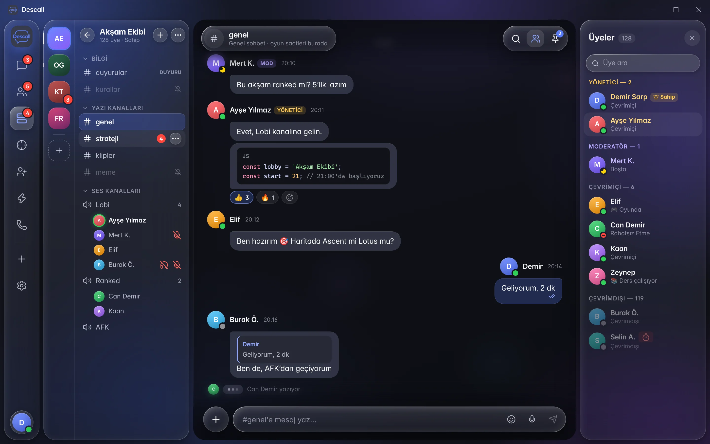

Servers & channels
Text, voice, and stage channels with categories — a lighter home for real communities
A lighter home for friends and squads — real servers, HD calls, screen share, and LFG.

Servers, chat, calls, and screen share in one quieter app — built for friends, gamers, and communities.
Text, voice, and stage channels with categories — a lighter home for real communities
Role hierarchy, staff rooms, and per-channel overrides ready for real communities
Gaming, friends, community, study & streaming — roles and channels pre-built
DMs that feel instant — typing, replies, and media without a Nitro wall
Crystal-clear group and server calls
Share your screen in calls with quality presets
Create a server from scratch or pick an advanced template. Roles, text & voice channels, and permission overrides come fully prepared.
Announcements, LFG, clips, VIP lounges, staff ops — topics and slowmode included in templates.
Admin, Moderator, Helper, VIP and more — with kick, ban, timeout, and audit logs.
Lobby, scrim, focus, and stage rooms so your crew can hop in without leaving the app.
